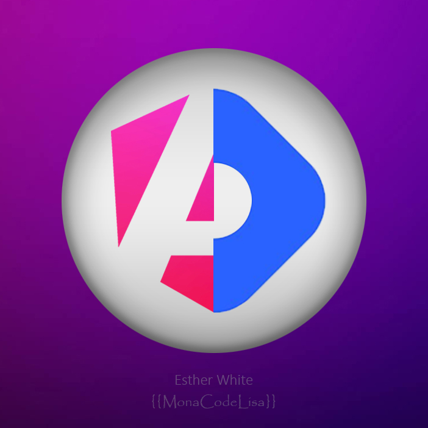

<mat-toolbar>
  <mat-toolbar-row>
    <a routerLink="/" class="logo">
      
      <h1>{{ blogName }}</h1>
    </a>
    <div class="theme-control">
      <mat-slide-toggle checked (click)="toggleTheme()"></mat-slide-toggle>
      @if (themeService.themeSignal() === 'dark'){
      <mat-icon>bedtime</mat-icon>
      } @else {
      <mat-icon>brightness_5</mat-icon>
      }
    </div>
  </mat-toolbar-row>
  <mat-toolbar-row>
    <div class="social">
      <div class="social-link">
        <a href="https://github.com/monacodelisa/Angular-Headless-Hashnode" target="_blank" rel="noopener noreferrer">
          <i class="fa-brands fa-github"></i>
        </a>

        <a href="https://angular-hashnode.monacodelisa.com/" target="_blank" rel="noopener noreferrer">
          <i class="fa-solid fa-globe"></i>
        </a>
      </div>
    </div>

    <div class="follow">
      <button mat-fab extended color="#0f0f0f">Follow</button>
    </div>
  </mat-toolbar-row>
  <mat-toolbar-row>
    <div class="series">
      @for (topic of topics; track topic) {
      <a class="topic-link" href="{{ topic.route }}" target="_blank" rel="noopener noreferrer">{{ topic.name }}
      </a>
      }
    </div>
  </mat-toolbar-row>
</mat-toolbar>
